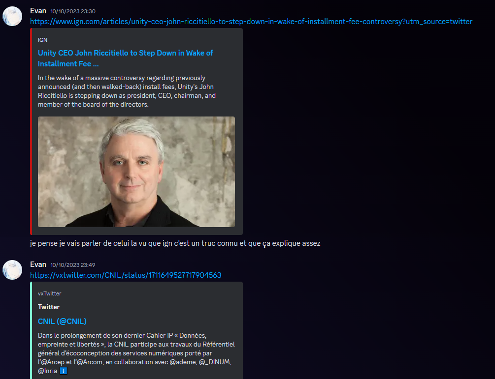

Description :
Le but de ce travail était de réaliser, comme son nom l'indique, une veille informationnelle sur trois sujets : la cryptographie, les moteurs de jeux vidéos et l'écoconception
Composantes essentielles :
CE 6.01 | En inscrivant sa démarche au sein d'une équipe pluridisciplinaire | Niveau nécessaire estimé : Expertise
Le travail s'effectuant par groupes de 3, il est important de savoir inscrire sa démarche au sein de l'équipe. Pour cela j'ai suggéré plusieurs articles que je pensais pertinents pour notre travail. J'ai aussi utilisé mon compte twitter avec lequel je me renseigne souvent. J'étais donc capable de trouver très simplement de nouvelles ressources.

CE 6.02 | En accompagnant la mise en oeuvre des évolutions informatiques | Niveau nécessaire estimé : Maitrise
Le principe d'une veille est de rester à jour sur les actualités. Il va donc de soit que veille une veille permet d'être à jour sur les évolutions informatiques.
CE 6.04 | En développant une communication efficace et collaborative | Niveau nécessaire estimé : Maitrise
Le travail étant à effectuer en groupe, nous avons utilisé discord pour pouvoir communiquer simplement et efficacement ainsi que des recherches en appel.
Apprentissages critiques :
AC 36.01 | Organiser et partager une veille technologique et informationnelle | Niveau nécessaire estimé : Maitrise
Comme le nom du projet indique, il s'agissait d'effectuer une veille informationnelle.